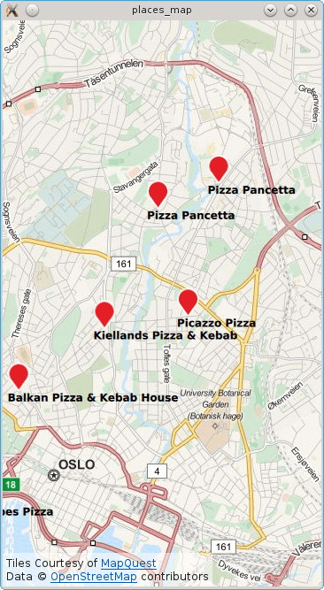

Places Map (QML)
The Places Map example demonstrates how to search for and display a list of places on a map using a MapItemView.

The example displays a map of the current location or, if no position is available, it uses Oslo/Norway. Subsequently a search for places matching the term "food" is performed and each result shown on the map.
Running the Example
To run the example from Qt Creator, open the Welcome mode and select the example from Examples. For more information, visit Building and Running an Example.
Local Search
To write the QML application that will show places on a map, we start by making the following import declarations.
import QtQuick import QtPositioning import QtLocation
Instantiate a Plugin instance. The Plugin is effectively the backend from where places are sourced from. Depending on the chosen plugin some manadatory parameters may be needed. In this case the OSM plugin is selected which does not have any mandatory parameters.
Plugin { id: myPlugin name: "osm" //specify plugin parameters if necessary //PluginParameter {...} //PluginParameter {...} //... }
Next we instantiate a PlaceSearchModel which we can use to specify search parameters and perform a places search operation. For illustrative purposes, update() is invoked once construction of the model is complete. Typically update() would be invoked in response to a user action such as a button click.
PlaceSearchModel { id: searchModel plugin: myPlugin searchTerm: "food" searchArea: QtPositioning.circle(positionSource.lastSearchPosition, 1000 /* 1 km radius */) Component.onCompleted: update() }
The map is displayed by using the MapView type and inside we declare the MapItemView and supply the search model and a delegate. An inline delegate has been used and we have assumed that every search result is of type PlaceSerachesult. Consequently it is assumed that we always have access to the place role, other search result types may not have a place role.
MapView { id: view anchors.fill: parent map.plugin: myPlugin; map.center: positionSource.lastSearchPosition map.zoomLevel: 13 MapItemView { model: searchModel parent: view.map delegate: MapQuickItem { coordinate: place.location.coordinate anchorPoint.x: image.width * 0.5 anchorPoint.y: image.height sourceItem: Column { Image { id: image; source: "marker.png" } Text { text: title; font.bold: true } } } } }
Finally, a PositionSource is used to reset the map to the curent location and find "food" places in the new area. The position information is updated every 2 minutes and if the new position is more than 500 meters away from the last food search area the place search is retriggered.
PositionSource { id: positionSource property variant lastSearchPosition: QtPositioning.coordinate(59.93, 10.76) //Initialized/Fallback to Oslo active: true updateInterval: 120000 // 2 mins onPositionChanged: { var distance = lastSearchPosition.distanceTo(position.coordinate) if (distance > 500) { // 500m from last performed food search lastSearchPosition = positionSource.position.coordinate } } }